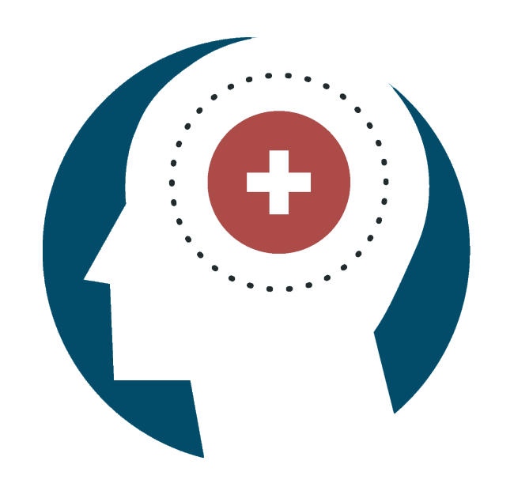

Profissional de Saúde Mental
O que é um Proficional de Saúde Mental?
Um profissional de saúde mental é um especialista treinado para ajudar indivíduos a lidar com questões emocionais, psicológicas e comportamentais. Eles podem fornecer diagnóstico, tratamento e apoio para uma ampla gama de problemas de saúde mental, como depressão, ansiedade, transtornos de humor, transtornos alimentares, dependência e muito mais. Existem vários tipos de profissionais de saúde mental, cada um com diferentes formações, qualificações e áreas de especialização. Aqui estão alguns dos principais tipos de profissionais de saúde mental:
- Psicólogos: Psicólogos Clínico:Realizam avaliações psicológicas e fornecem terapia para uma ampla gama de problemas de saúde mental. Eles podem usar diversas abordagens terapêuticas, como terapia cognitivo-comportamental (TCC), terapia psicodinâmica e outras. Psicólogos Escolares: Trabalham em ambientes educacionais para ajudar estudantes com problemas emocionais, comportamentais e acadêmicos.
- Psiquiatras: São médicos especializados em saúde mental. Eles podem diagnosticar transtornos mentais, prescrever medicamentos e fornecer terapia. Por terem formação médica, estão aptos a tratar os aspectos biológicos dos transtornos mentais.
- Psicoterapeutas: Profissionais que fornecem terapia através de várias modalidades, como terapia de grupo, terapia familiar, terapia de casal, etc. Podem ter formações variadas, incluindo psicologia, serviço social ou aconselhamento.
- Conselheiros ou Terapeutas: Conselheiros Licenciados: Trabalham com indivíduos, casais e grupos para tratar questões emocionais e de saúde mental. Eles podem ter títulos como conselheiros de saúde mental, conselheiros de dependência, entre outros. Terapeutas de Casamento e Família: Especializados em trabalhar com casais e famílias para resolver problemas relacionais e dinâmicas familiares.
- Assistentes Sociais Clínicos: São assistentes sociais com formação e licenciamento adicional para fornecer terapia. Eles ajudam os clientes a lidar com problemas emocionais, sociais e de saúde mental, muitas vezes em contextos comunitários.
- Enfermeiros Psiquiátricos e de Saúde Mental: Enfermeiros registrados com especialização em saúde mental. Eles podem fornecer tratamento, apoio e, em alguns casos, prescrever medicamentos (dependendo da jurisdição).
- Terapeutas Ocupacionais de Saúde Mental: Ajudam os indivíduos a desenvolver habilidades para a vida diária e a enfrentar os desafios associados aos transtornos mentais.
- Neurologia: Médicos que tratam distúrbios do sistema nervoso e, em alguns casos, transtornos mentais que têm uma base neurológica, como demência e epilepsia.
- Psicanalistas: Profissionais que seguem a abordagem terapêutica baseada nas teorias de Sigmund Freud e seus sucessores, focando em processos inconscientes que influenciam o comportamento.
Cada tipo de profissional de saúde mental tem um papel específico e pode usar diferentes abordagens e técnicas para ajudar os indivíduos a melhorar seu bem-estar mental e emocional. Dependendo das necessidades do paciente, pode ser necessário trabalhar com um ou mais desses profissionais para obter o melhor resultado possível.
O que se Estuda um Proficional de Saúde Mental?
O estudo para se tornar um profissional de saúde mental abrange uma variedade de disciplinas e áreas de conhecimento. Dependendo do tipo específico de profissional, o currículo pode variar, mas em geral, inclui os seguintes componentes:
- Psicólogos;
- Psiquiatras;
- Psicoterapeutas e Conselheiros;
- Assistentes Sociais Clínicos;
- Enfermeiros Psiquiatricos e de Saúde Mental;
- Psicanalistas.
Quais são as áreas de atuação de um Proficional de Saúde Mental?
Os profissionais de saúde mental podem atuar em uma variedade de ambientes e funções, atendendo a diferentes populações e lidando com uma ampla gama de questões emocionais, comportamentais e psicológicas. Os profissionais de saúde mental podem trabalhar em uma variedade de ambientes, incluindo hospitais, clínicas, escolas, empresas, prisões, e organizações sem fins lucrativos, adaptando suas habilidades e conhecimentos às necessidades específicas de suas populações-alvo.
Olá! Queremos proporcionar a melhor experiência possível em nosso site. Se você tiver sugestões para torná-lo mais agradável e útil, por favor, envie-nos um e-mail para Aghamenon Toberlock Estudos. Estamos ansiosos para ouvir suas ideias e melhorar nosso site juntos!